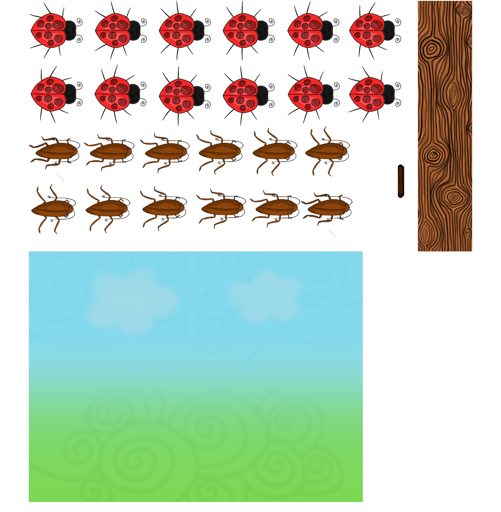

My frist own game that I coded in SFML. The idea came from a game called "whack a mole". Instead of moles you are trying to kill cockroaches that are coming out of trees. Be careful, you can't hit ladybugs. The speed of bugs increases with every time you hit a cockroach. There is a hit and a mistake counter. You can reduce your mistakes by freeing a ladybug with right mouse click.
This project is entirely mine. I coded the game, drew the graphics and animated it.
